Reporte de
Sostenibilidad
2025
Este reporte da cuenta del desempeño ambiental, social y económico de las seis empresas del ecosistema Warecloud durante el período comprendido entre el 1 de enero y el 31 de diciembre de 2025, elaborado usando como referencia los Estándares del Global Reporting Initiative (GRI).
mila@warecloud.ar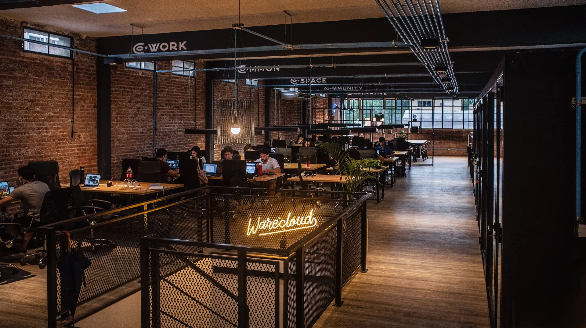
triple impacto
Buscamos hacer negocios de manera diferente cuidando a las personas y al planeta. Integramos tecnología, impacto y regeneración para construir futuros posibles. Cada empresa del grupo aborda desafíos reales, genera valor económico y contribuye al bienestar social y ambiental desde su propio modelo de negocio.
Líderes que inspiran
El liderazgo en Warecloud va más allá de las decisiones estratégicas: es la capacidad de potenciar a cada persona del equipo y construir entornos donde el bienestar y el crecimiento son parte del trabajo cotidiano.
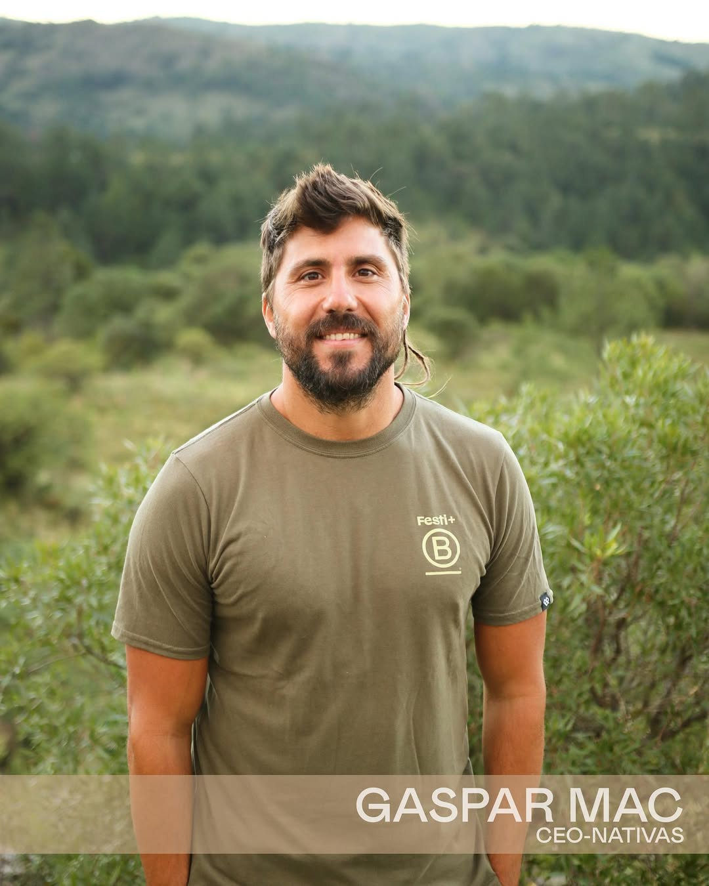
Director Titular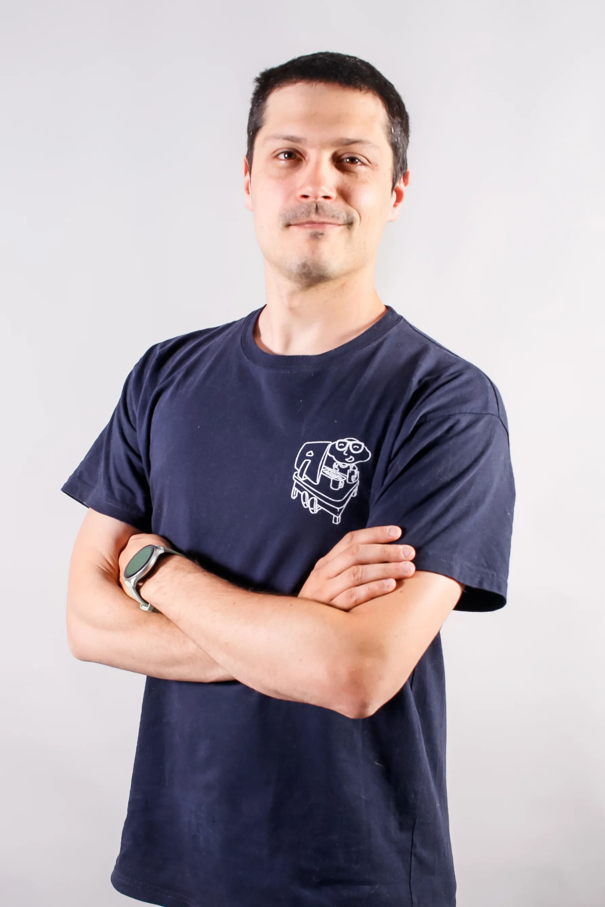
Director SuplenteDirectorio de Warecloud S.A.: Gaspar Mac (Director Titular) y Matías Boselli (Director Suplente) en calidad de socios fundadores.
Tecnología, impacto y propósito
Este es nuestro cuarto reporte de sostenibilidad. Y la forma en que lo presentamos también dice algo sobre quiénes somos. La tecnología no es una herramienta que adoptamos, es la manera en que pensamos y construimos. Está en el ADN de cada empresa del ecosistema, y cada año encontramos nuevas formas de demostrarlo desde una lógica de triple impacto.
Lo que más nos impulsa a seguir es la certeza de que el impacto real se acumula en el tiempo. No en los grandes gestos, sino en las decisiones que se repiten año a año, aunque no sean las más visibles. Lo que pasó en 2025 lo demuestra: cada empresa del ecosistema avanzó en sus propios desafíos compartiendo una misma forma de entender el crecimiento, sustentada en la responsabilidad, la medición y el impacto real. Ese compromiso se refleja en proyectos que fortalecen comunidades, regeneran ecosistemas, impulsan la innovación y generan oportunidades para seguir construyendo organizaciones más sólidas y comprometidas.
Seguiremos siendo un ecosistema donde las empresas se desafíen mutuamente a mejorar, donde el crecimiento no se desconecte del propósito y donde cada persona que forma parte de Warecloud encuentre un lugar que valga la pena construir.
Porque para nosotros, el impacto positivo no es un destino al que se llega: es el camino que construimos cada día.
Seis empresas,
un propósito compartido
Construir futuros posibles integrando tecnología, impacto positivo y regeneración. Dos sedes en Rosario concentran el corazón operativo del ecosistema.
Una estrategia que guía nuestras decisiones
El ecosistema en números
Métricas integradas y consolidadas de todo el ecosistema para el 2025.
Gobernanza
Cultivando bienestar
Contamos con un Manual de Buenas Prácticas que tiene como objetivo garantizar un ambiente de trabajo seguro, inclusivo y eficiente, favoreciendo tanto el desempeño individual como el colectivo. Es el marco de políticas que establece los lineamientos y principios que guían el comportamiento organizacional y la gestión diaria.
Horarios flexibles de lunes a viernes, home office y espacios de convivencia pensados para el bienestar.
Saber más →Acompañamos cada etapa de la vida personal. Permiso parental con 100% de retorno al puesto.
Saber más →+45 instancias de formación en 2025. Invertimos en el desarrollo profesional de cada persona del equipo.
La información del ecosistema y sus clientes se maneja con estricta confidencialidad en todas las operaciones.
Saber más →Promovemos la ética en todas las operaciones: no discriminación, no corrupción y compromiso social genuino.
Saber más →Tolerancia cero frente al acoso, la violencia y la discriminación. Un entorno seguro y respetuoso para todes.
Saber más →Contamos con políticas orientadas a promover la ética y la transparencia en todas nuestras operaciones.
Tolerancia cero frente a cualquier conducta de acoso, violencia o discriminación.
Adoptamos una política de tolerancia cero frente a cualquier conducta de acoso sexual, laboral, violencia, mobbing o discriminación por motivos de género u otras condiciones. Este compromiso se extiende a todas las personas vinculadas a la organización, incluyendo colaboradores, contratistas, practicantes y terceros. En este sentido, contamos con un Protocolo de Prevención y Actuación ante Situaciones de Acoso, que establece los mecanismos para la detección, denuncia y gestión de casos.
Un entorno flexible, humano y colaborativo diseñado para que cada persona pueda dar lo mejor de sí.
Toda la información generada en el ecosistema se trata con estricta confidencialidad. Es responsabilidad de cada colaborador preservarla.
Es política de Warecloud asegurarse de que sus operaciones, actividades, relaciones y las de sus clientes se mantengan confidenciales. Si durante las distintas actividades se obtiene información confidencial o propiedad de la empresa o de los clientes, dicha información será manejada con estricta confidencialidad.
Buscamos los puntos más débiles del equipo para capacitarnos y lograr una mejora continua, tanto a nivel profesional como personal.
El impacto se construye en red
Reconocemos que nuestra capacidad de generar impacto está directamente vinculada a la calidad de nuestras alianzas. Durante 2025, fortalecimos alianzas con organizaciones clave, integrando conocimientos, recursos y capacidades para abordar problemáticas complejas desde una mirada sistémica.
Ambiental
Elegimos reciclar
Entendemos la importancia de una gestión responsable de los residuos como parte fundamental de nuestras prácticas sostenibles, por eso implementamos un sistema integral de gestión de residuos en todas las empresas y elegimos separar, reciclar y darle una segunda vida a nuestros residuos reciclables.
Los residuos reciclables generados en las operaciones de las empresas son entregados a la cooperativa de trabajo Ecomarea, una organización que promueve un modelo de gestión integral de residuos basado en principios de triple impacto.
Su equipo está conformado por personas que atraviesan situaciones de vulnerabilidad: desde sus comienzos, 50 jóvenes han pasado por Ecomarea, de los cuales 30 lograron insertarse en el mercado laboral. La gestión de residuos se convierte así en una oportunidad concreta de inclusión social y desarrollo local.
Huella de carbono consolidada
del ecosistema
El cálculo se realiza bajo estándares de referencia internacional como el Greenhouse Gas Protocol (GHG Protocol) y la norma ISO 14064-1, lo que permite asegurar consistencia, comparabilidad y transparencia en los resultados reportados.
La medición se realiza bajo un enfoque de control operacional, considerando las actividades desarrolladas y aquellas fuentes de emisión directamente vinculadas a la operación de cada empresa.
La huella se calcula por empresa y se presenta en detalle en la sección de cada una.
En Warecloud entendemos que las personas son el motor de todo lo que hacemos. Apostamos a construir equipos diversos, comprometidos y en constante evolución. Creemos que el bienestar de cada colaborador es inseparable del impacto positivo que generamos como organización.
Lo que no se mide no se puede mejorar. Por eso registramos los recursos que consumimos y los residuos que generamos. Además, año a año trabajamos para reducir nuestro impacto.
Desde 2021 medimos las emisiones de gases de efecto invernadero generadas por nuestra operación. Trabajamos para reducirlas año a año y compensamos, mediante créditos de carbono, aquellas que todavía no logramos eliminar.
A través de Instagram conectamos con nuevas audiencias y consolidamos espacios de interacción con nuestros grupos de interés.
Entendemos el desempeño financiero como parte integral de nuestra estrategia de triple impacto: crear valor económico es condición para crear valor social y ambiental.
Una comunidad que trasciende
Parte de nuestro espíritu es estar presentes más allá de lo que construimos. Estas son las iniciativas que nos conectan con el mundo de afuera.
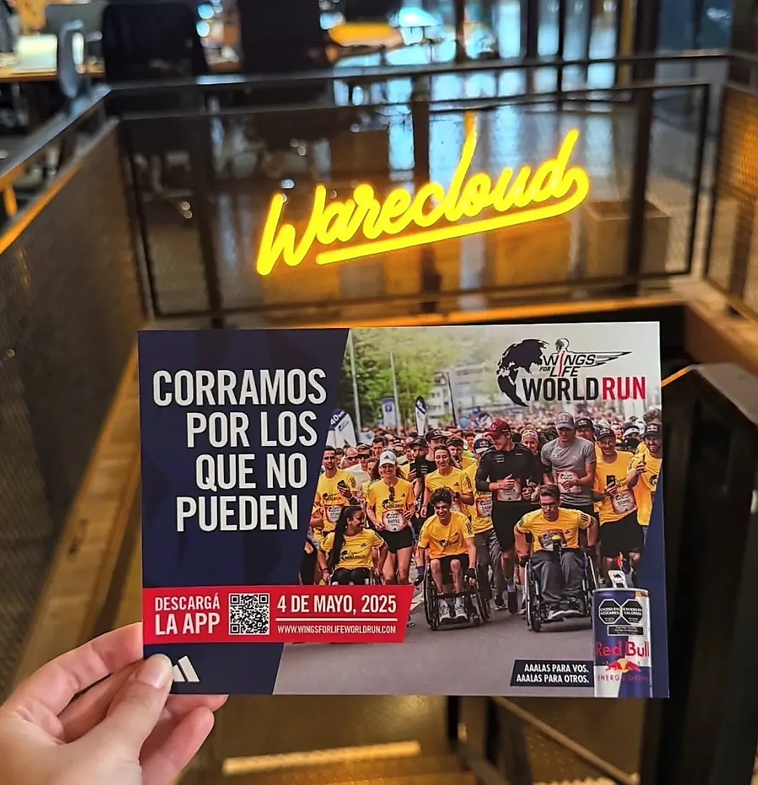
Deportes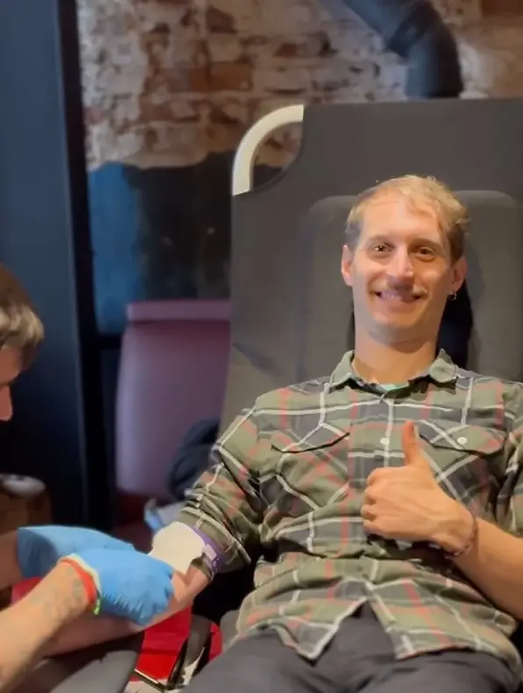
Salud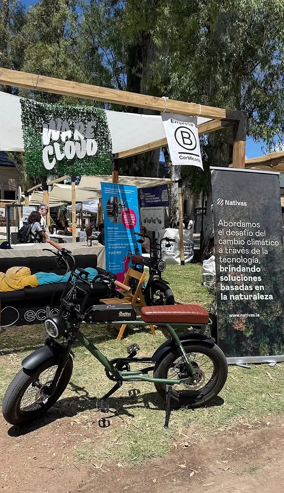
Ambiente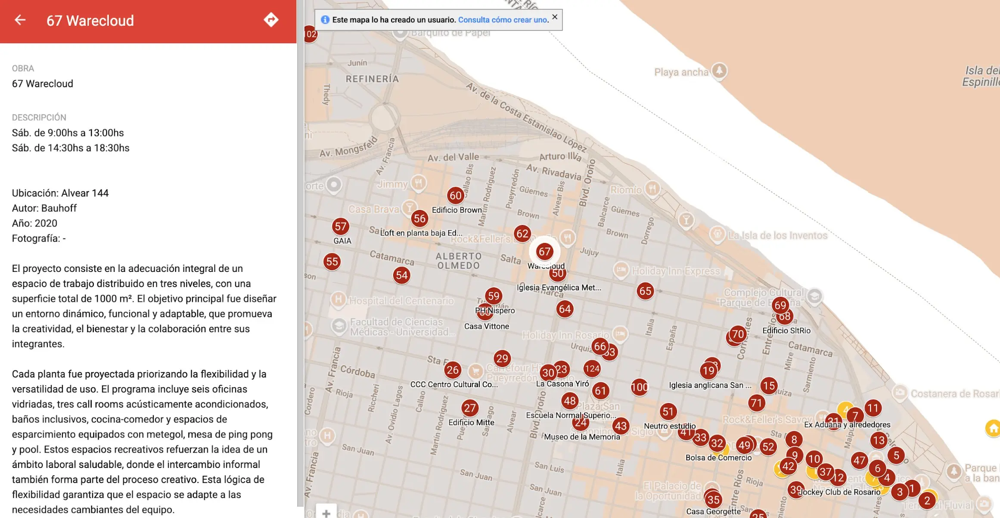
Comunidad Academia
Academia

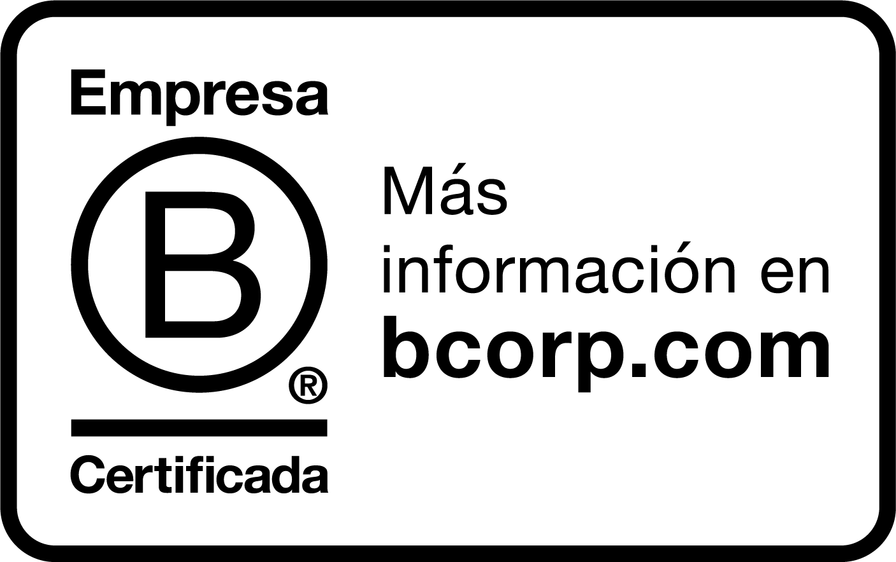
Altos estándares de desempeño social, ambiental y de transparencia en el modelo de negocio.
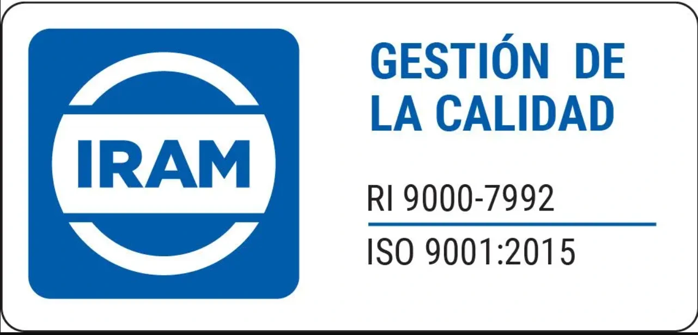
Procesos sólidos, consistentes y enfocados en la mejora continua y la satisfacción del cliente.
En órbita desde 2010, construyendo con el mismo propósito y cada vez más historia para contar.
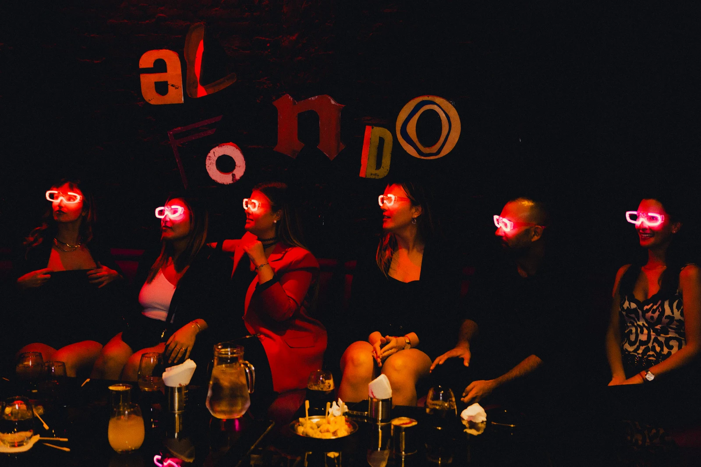
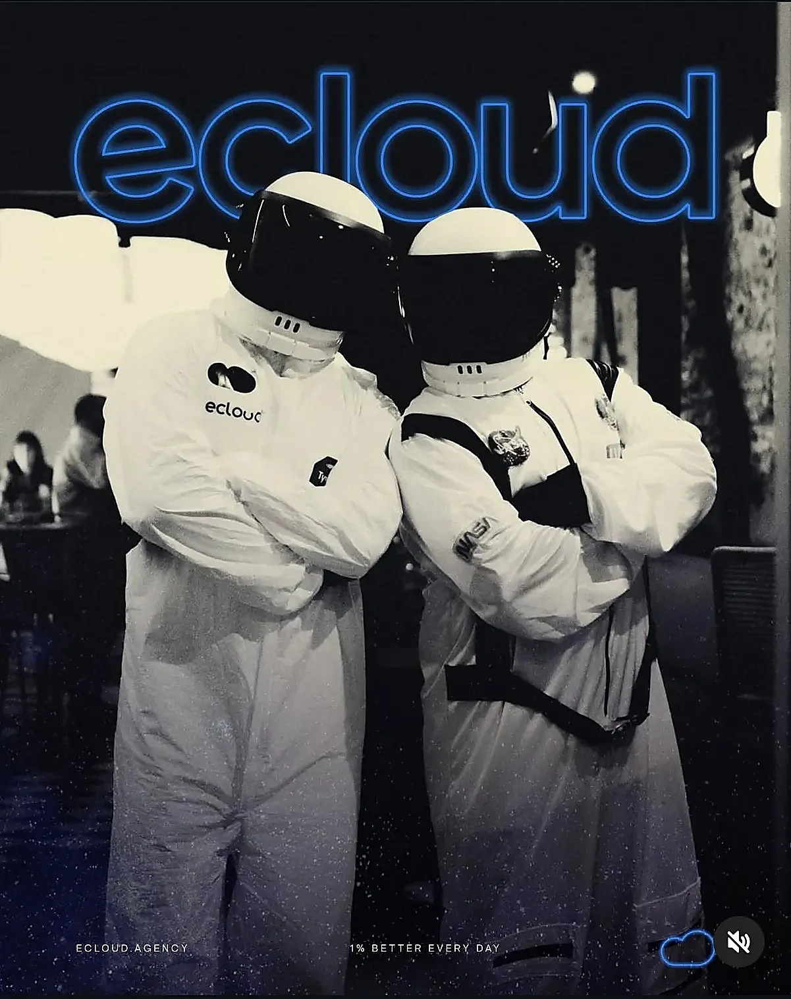
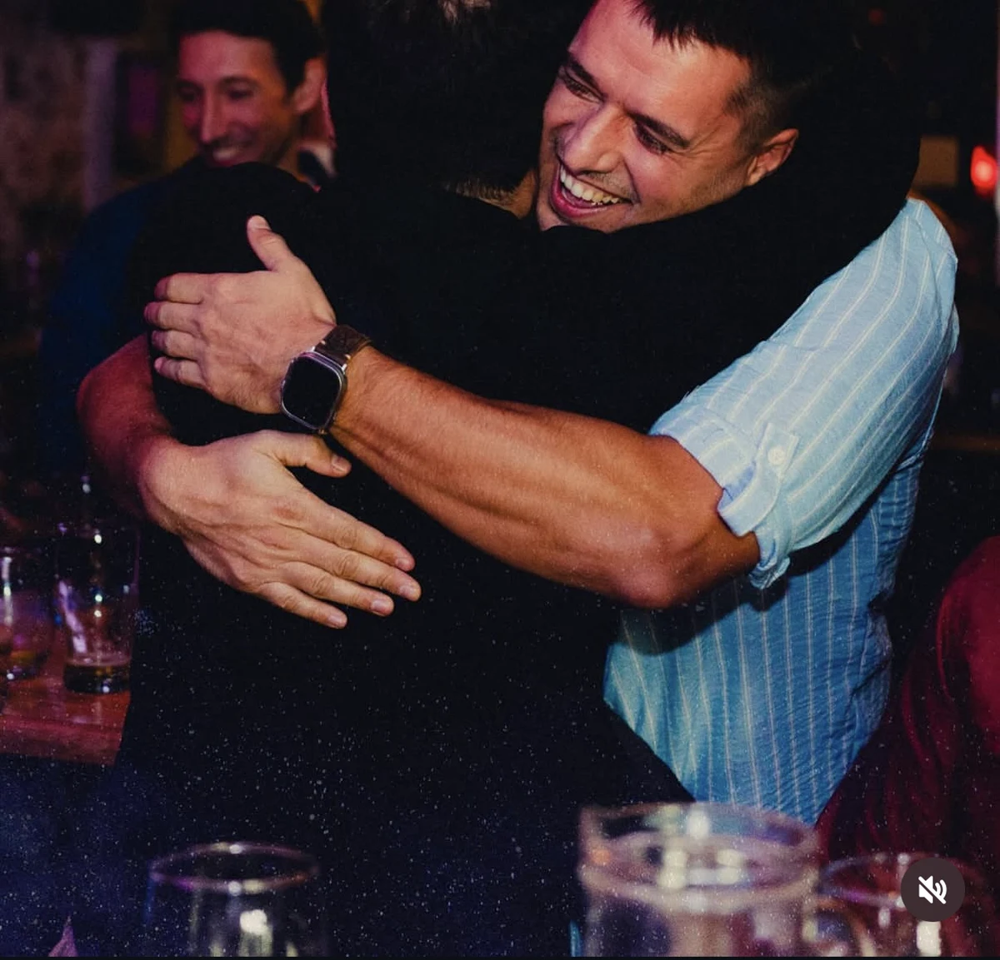
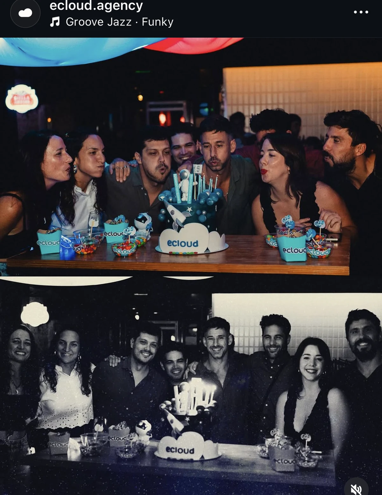
Nos encanta afrontar retos y salir de nuestra zona de confort. Para cada desafío contamos con un equipo especializado que crea soluciones modernas, innovadoras y centradas en el usuario.
Lo que no se mide no se puede mejorar. Por eso registramos los recursos que consumimos y los residuos que generamos. Además, año a año trabajamos para reducir nuestro impacto.
Desde 2021 medimos las emisiones de gases de efecto invernadero generadas por nuestra operación. Trabajamos para reducirlas año a año y compensamos, mediante créditos de carbono, aquellas que todavía no logramos eliminar.
100% compensada
Carbon Assets del Proyecto Bosque Vinalito, desarrollado por Nativas en el Gran Chaco, Jujuy.
Los ingresos sostienen el desarrollo de soluciones digitales con propósito y la inversión continua en talento y formación.
Desarrollamos productos pensados para nuestros clientes: entendemos el problema, construimos herramientas y la ponemos a funcionar. Sagia es el ejemplo más concreto de ese proceso. En 2025 también llevamos esa forma de trabajar a los foros donde se debate el futuro del sector: Main Sponsors en AILATAM, oradores en AIFI25 y organizadores de la primera Rosario AI Talks.
Creemos que una empresa crece cuando crece el entorno que la rodea. Por eso invertimos tiempo y energía en iniciativas que forman, conectan e incluyen: desde programas de empleabilidad joven hasta jornadas de liderazgo femenino, pasando por el aula y por gestos pequeños que, acumulados, hacen la diferencia.
La presencia no es vanidad: es una forma de comunicar valores, de atraer talento y de abrir puertas. En 2025 aparecimos en medios, eventos y plataformas digitales con una voz propia.


Conformamos un equipo interdisciplinario de profesionales comprometidos y expertos en ciencia, tecnología, innovación, derecho, finanzas, agronomía y naturaleza. Abordamos la crisis climática y ecológica demostrando que los servicios ecosistémicos generan un valor real y tangible.
Lo que no se mide no se puede mejorar. Por eso registramos los recursos que consumimos y los residuos que generamos. Además, año a año trabajamos para reducir nuestro impacto.
Medimos las emisiones de gases de efecto invernadero generadas por nuestra operación. Trabajamos para reducirlas año a año y compensamos, mediante créditos de carbono, aquellas que todavía no logramos eliminar.
100% compensada
Carbon Assets del Proyecto Bosque Vinalito, desarrollado por Nativas en el Gran Chaco, Jujuy.
Nota: La Combustión móvil concentra el mayor volumen de emisiones porque incluye el combustible de la flota vehicular utilizada en el trabajo de campo. La actividad territorial es inherente a la misión de Nativas; aun así, trabajamos activamente para reducir los desplazamientos.

Nuestras redes amplifican el impacto, conectando nuestras acciones con una comunidad en constante crecimiento.
Los ingresos sostienen el desarrollo de proyectos de regeneración ecosistémica y el crecimiento de los mercados de activos ambientales.

Destacados 2025


En Bauhoff, el equipo acompaña cada etapa del desarrollo de los proyectos, desde la planificación hasta la ejecución.
Lo que no se mide no se puede mejorar. Por eso registramos los recursos que consumimos y los residuos que generamos. Además, año a año trabajamos para reducir nuestro impacto.
Desde 2021 medimos las emisiones de gases de efecto invernadero generadas por nuestra operación. Trabajamos para reducirlas año a año y compensamos, mediante créditos de carbono, aquellas que todavía no logramos eliminar.
100% compensada
Carbon Assets del Proyecto Bosque Vinalito, desarrollado por Nativas en el Gran Chaco, Jujuy.
Elegimos abastecernos de forma local para garantizar rapidez en obra, optimizar la logística y acompañar el desarrollo económico de la ciudad. Todos nuestros proveedores operan en Rosario.
En proyecto durante 2025
Entendemos cada proyecto como una oportunidad para repensar cómo se vive la ciudad: los espacios, la escala, los materiales y la forma en que las personas habitan lo que construimos. Durante 2025, en Bauhoff se avanzó en tres desarrollos que expresan esa visión, en distintas escalas y contextos urbanos.


Conocé más sobre nuestros proyectos en bauhoff.com.ar/works.
Ver todos los proyectos →Entendemos las redes como un espacio para mostrar lo que nos define: el diseño, la innovación y la forma en que habitamos la ciudad.
Altos estándares de triple impacto, transparencia y responsabilidad.
Procesos sólidos, consistentes y alineados con los más altos estándares de calidad.
Seguridad verificable, calidad consistente y menos fallas operativas conforme norma IRAM 40020:2017.
Innovación técnica reconocida: candado electromecánico, software solar autónomo y ruedas antivandálicas.
Nuestro equipo refleja la esencia de Smod: diversidad de miradas, compromiso con el impacto y vocación por transformar la movilidad.
Lo que no se mide no se puede mejorar. Por eso registramos los recursos que consumimos y los residuos que generamos. Además, año a año trabajamos para reducir nuestro impacto.
Los residuos peligrosos fueron entregados a tratadores habilitados y dispuestos mediante incineración cumpliendo con la normativa vigente. GRI 306-5
Desde 2021 medimos las emisiones de gases de efecto invernadero generadas por nuestra operación. Trabajamos para reducirlas año a año y compensamos, mediante créditos de carbono, aquellas que todavía no logramos eliminar.
100% compensada
Carbon Assets del Proyecto Bosque Vinalito, desarrollado por Nativas en el Gran Chaco, Jujuy.
La facturación refleja el valor económico generado durante 2025, expresado en pesos argentinos. Los ingresos sostienen la expansión de sistemas de micromovilidad sostenible en ciudades de Latinoamérica.
Jóvenes del barrio Ludueña aprendieron ensamblado y reparación de bicicletas con la comunidad Sagrada Familia, en el marco del Plan Sostenible de la Provincia de Santa Fe. Un programa de inclusión laboral que apuesta por la autonomía y el impacto real en el territorio.
Destacados 2025

Siete años de puertas abiertas en el mismo barrio. Desde 2018, La Bodeguita creció junto a su comunidad: sus vecinos, sus equipos y quienes eligieron hacer de este espacio un punto de encuentro. Cada torneo, cada vermut compartido, cada miércoles de fondue es parte de una historia que se construye colectivamente — y que sigue escribiéndose.
En La Bodeguita, las personas son el corazón del negocio. Cada colaborador es parte de una comunidad que se construye día a día con dedicación, buen trato y vocación por la hospitalidad.
Energía de red correspondiente a la operación de La Bodeguita. Incluye climatización, iluminación, cocina y servicios del local.
Medimos nuestra huella porque entendemos que gestionar lo que impactamos es parte de operar con responsabilidad en el barrio que nos dio origen.
Nuestras redes son un espacio de vinculación activa con la comunidad: compartimos lo que hacemos, escuchamos lo que nos dicen y construimos juntos la identidad de La Bodeguita más allá de sus paredes.
Los datos corresponden al período julio–diciembre 2025.
Índice de contenidos GRI
| Declaración de uso | Warecloud ha presentado la información citada en este índice de contenidos GRI para el período comprendido entre el 01 de enero de 2025 y el 31 de diciembre de 2025 utilizando como referencia los Estándares GRI. |
| GRI 1 usado | GRI 1: Fundamentos 2021 |
| Estándares sectoriales | No aplica a los estándares sectoriales disponibles |
| GRI | Título | Ubicación | ODS |
|---|---|---|---|
| La organización y sus prácticas de reporte | |||
| 2-1 | Detalles organizacionales | Warecloud S.A. · Alvear 144, Rosario, Argentina · País de operaciones: Argentina | |
| 2-2 | Entidades incluidas en el informe | Warecloud · Ecloud · Nativas · Bauhoff · Smod · La Bodeguita | 17 |
| 2-3 | Período, frecuencia y punto de contacto | 01/01/2025 – 31/12/2025 · Frecuencia: anual · mila@warecloud.ar · Publicación: julio 2026 | |
| 2-4 | Actualización de la información | No se realizaron reformulaciones de información presentada en períodos anteriores. | |
| 2-5 | Verificación externa | El Reporte de Sostenibilidad 2025 no cuenta con verificación externa. | |
| Actividades y equipos de trabajo | |||
| 2-6 | Actividades, cadena de valor y otras relaciones comerciales | Warecloud · Ecloud · Nativas · Bauhoff · Smod · La Bodeguita — secciones de empresa | 8 · 17 |
| 2-7 | Empleados | "Las personas" — Warecloud · Ecloud · Nativas · Bauhoff · Smod · La Bodeguita | 8 |
| Gobernanza | |||
| 2-9 | Estructura de gobernanza y composición | "Gobernanza" · "Líderes que inspiran" | 16 |
| 2-18 | Evaluación del desempeño del máximo órgano de gobierno | "El desarrollo es bidireccional" — las evaluaciones de desempeño son bidireccionales en todos los niveles jerárquicos | 16 |
| Estrategia, políticas y prácticas | |||
| 2-22 | Declaración sobre la estrategia de desarrollo sostenible | "Tecnología, impacto y propósito" (Carta del liderazgo) | 17 |
| 2-23 | Compromisos y políticas | "Políticas de ética y transparencia" · | 16 |
| 2-25 | Procesos para remediar los impactos negativos | 16 | |
| 2-26 | Mecanismos para solicitar asesoramiento y plantear inquietudes | · "Gobernanza" | 16 |
| 2-28 | Afiliación a asociaciones | "El impacto se construye en red" | 17 |
| 3-1 | Proceso de determinación de los temas materiales | "Proceso de materialidad" | |
| 3-2 | Lista de temas materiales | "Proceso de materialidad" | |
| Desempeño económico | |||
| 201-1 | Valor económico directo generado y distribuido | "Facturación" — Warecloud · Ecloud · Nativas · Bauhoff · Smod · La Bodeguita | 8 |
| 204-1 | Proporción de gasto en proveedores locales | Bauhoff — "100% Proveedores locales" | 8 · 12 |
| Biodiversidad · GRI 101: 2024 | |||
| 101-2 | Acciones y recursos relacionados con la biodiversidad | Nativas — "Nuestros programas" (Bosque Vinalito · Programa Agro · Programa Ciudades) | 15 |
| 101-5 | Ubicaciones con impactos sobre la biodiversidad | Nativas — "Bosque Vinalito" | 15 |
| 101-8 | Servicios ecosistémicos | Nativas — sección de empresa | 15 |
| Energía · GRI 302: 2016 | |||
| 302-1 | Consumo de energía dentro de la organización | "Consumo de energía" — Warecloud · Ecloud · Nativas · Bauhoff · Smod · La Bodeguita · Ambiental consolidado | 7 |
| 302-3 | Intensidad energética | · Smod · La Bodeguita — "Consumo de energía" | 7 |
| Emisiones · GRI 305: 2016 | |||
| 305-1 | Emisiones directas de GEI | "Huella de carbono" — Warecloud · Ecloud · Nativas · Bauhoff · Smod · La Bodeguita · Consolidado | 13 |
| 305-2 | Emisiones indirectas de GEI asociadas a la energía | "Huella de carbono" — Warecloud · Ecloud · Nativas · Bauhoff · Smod · La Bodeguita | 13 |
| 305-3 | Otras emisiones de GEI | "Huella de carbono" — Warecloud · Ecloud · Nativas · Bauhoff · Smod · La Bodeguita | 13 |
| 305-4 | Intensidad de las emisiones de GEI | "Huella de carbono" — Warecloud · Ecloud · Nativas · Bauhoff · Smod · La Bodeguita | 13 |
| Residuos · GRI 306: 2020 | |||
| 306-2 | Gestión de impactos significativos relacionados con los residuos | "Elegimos reciclar" · "Residuos" — Warecloud · Ecloud · Nativas · Bauhoff · Smod · La Bodeguita | 12 |
| 306-3 | Residuos generados | "Residuos" — Warecloud · Ecloud · Nativas · Bauhoff · Smod · La Bodeguita | 12 |
| 306-4 | Residuos no destinados a eliminación | "Elegimos reciclar" · "Residuos" — Warecloud · Ecloud · Nativas · Bauhoff · Smod · La Bodeguita | 12 |
| 306-5 | Residuos destinados a eliminación | Smod — "Residuos" | 12 |
| Empleo · GRI 401: 2016 | |||
| 401-1 | Contrataciones y rotación de personal | "Las personas" · "Empleo 2023–2025" — Warecloud · Ecloud · Nativas · Bauhoff · Smod · La Bodeguita | 8 |
| 401-2 | Prestaciones para los empleados a tiempo completo | "Social" → "Beneficios" · "Jornada laboral" | 3 · 8 |
| 401-3 | Permiso parental | 3 · 8 | |
| Formación y educación · GRI 404: 2016 | |||
| 404-1 | Horas de formación promedio por empleado | "Capacitaciones y formación" | 4 · 8 |
| 404-2 | Programas para desarrollar las competencias de los empleados | "Capacitaciones" · "Capacitaciones y formación" | 4 · 8 |
| 404-3 | Porcentaje de empleados con evaluaciones de desempeño | "El desarrollo es bidireccional" | 4 · 8 |
| Diversidad e igualdad de oportunidades · GRI 405: 2016 | |||
| 405-1 | Diversidad de órganos de gobierno y empleados | "Líderes que inspiran" · "Las personas" — Warecloud · Ecloud · Nativas · Bauhoff · Smod · La Bodeguita | 5 · 10 |
| Comunidades locales · GRI 413: 2016 | |||
| 413-1 | Operaciones con participación de la comunidad local | Warecloud — "Una comunidad que trasciende" · Ecloud — "Comunidad" · Smod · Nativas · La Bodeguita — secciones de empresa | 11 · 17 |
GRI 101: Biodiversidad 2024 entra en vigencia el 1 de enero de 2026; su inclusión en este reporte es voluntaria y anticipatoria.
Social
Un entorno de trabajo diseñado para que cada persona pueda desarrollarse, crecer y dejar su propia huella.
Beneficios
Diseñamos una propuesta de valor que acompaña a cada persona más allá del trabajo. Estos beneficios reflejan nuestro compromiso con el bienestar, el desarrollo y la calidad de vida de quienes forman parte del ecosistema.
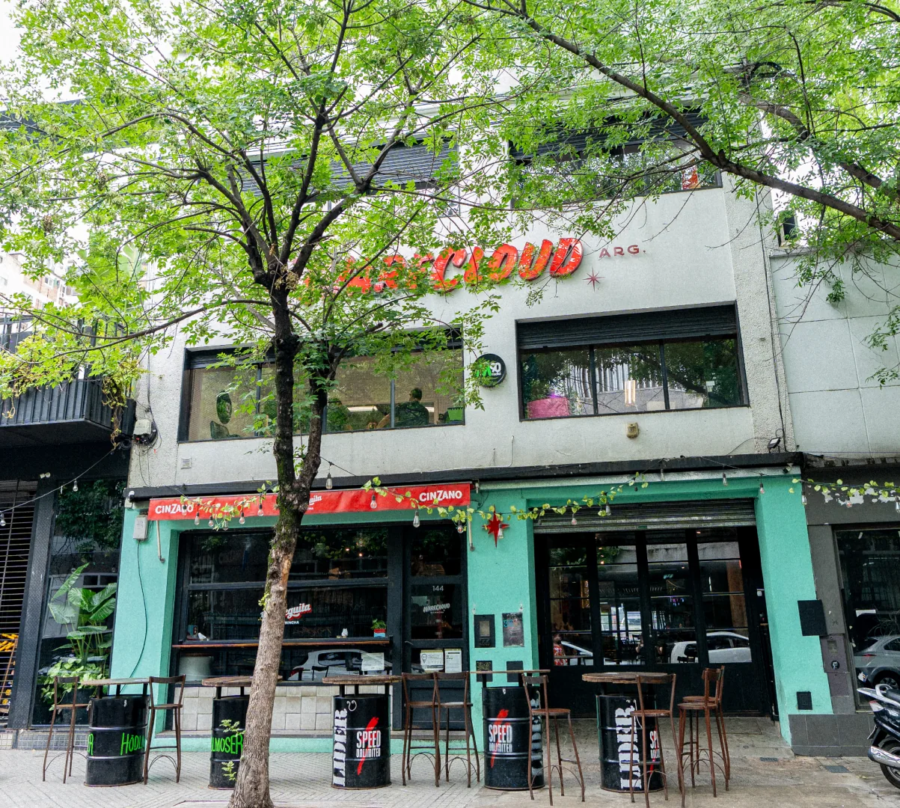
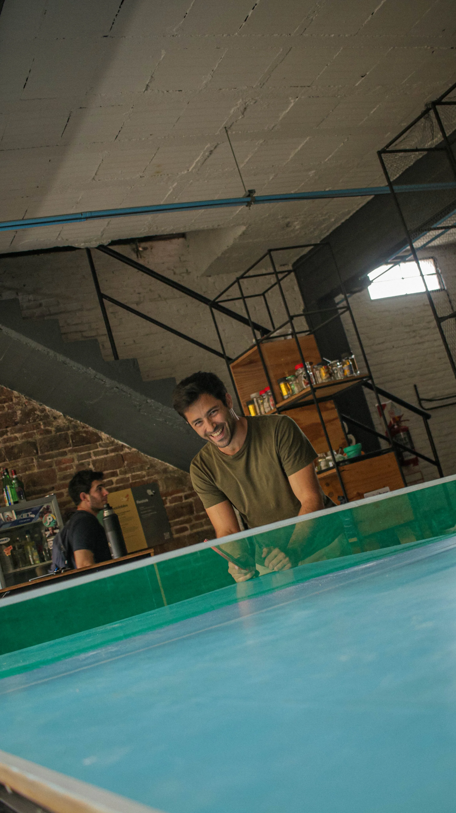
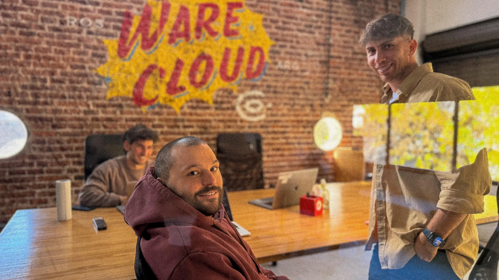
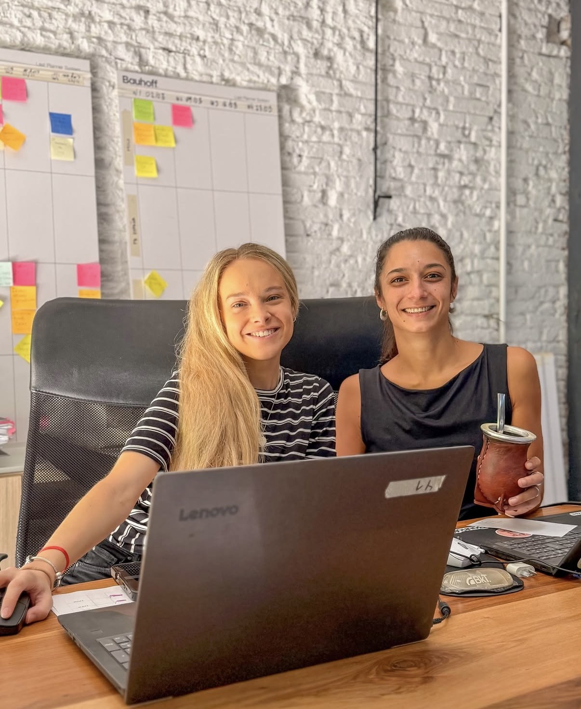
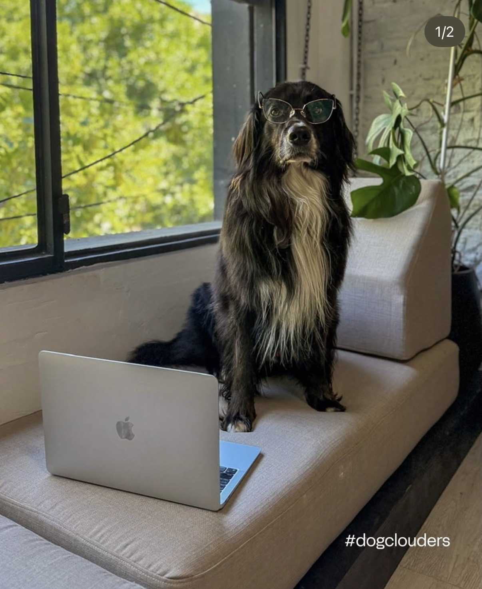
Capacitaciones y formación
El ecosistema Warecloud invirtió en formación profesional reflejando el compromiso con el desarrollo continuo de los colaboradores como pilar estratégico del modelo de negocio, durante el período reportado:
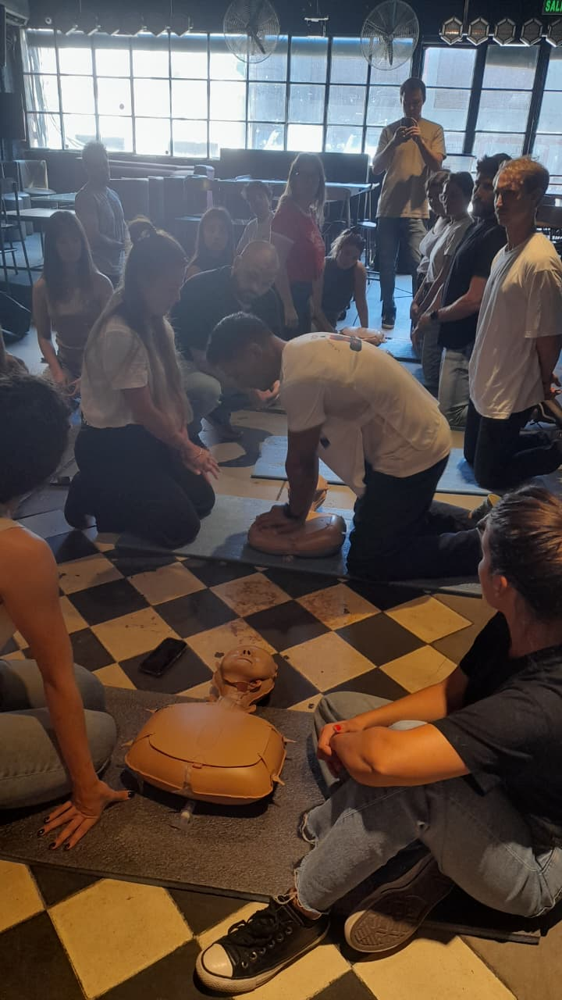
Salud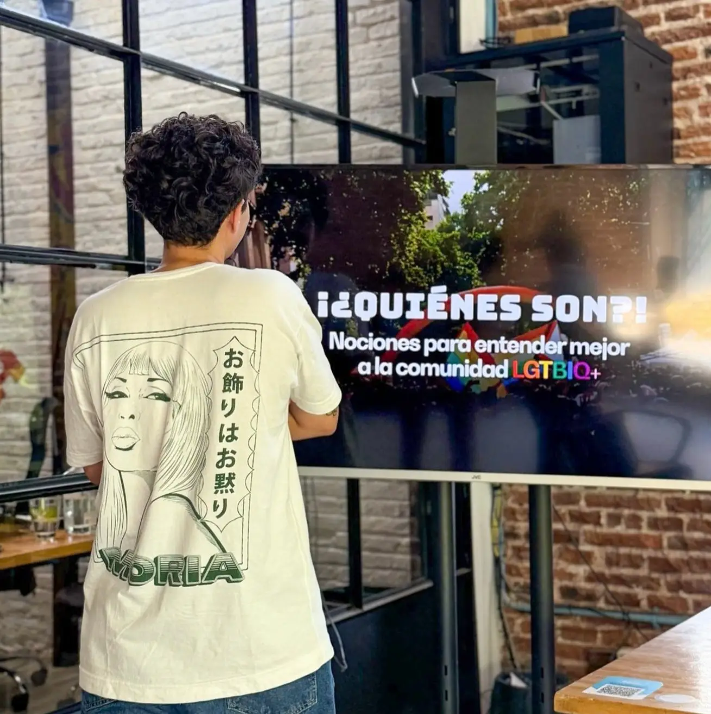
Diversidad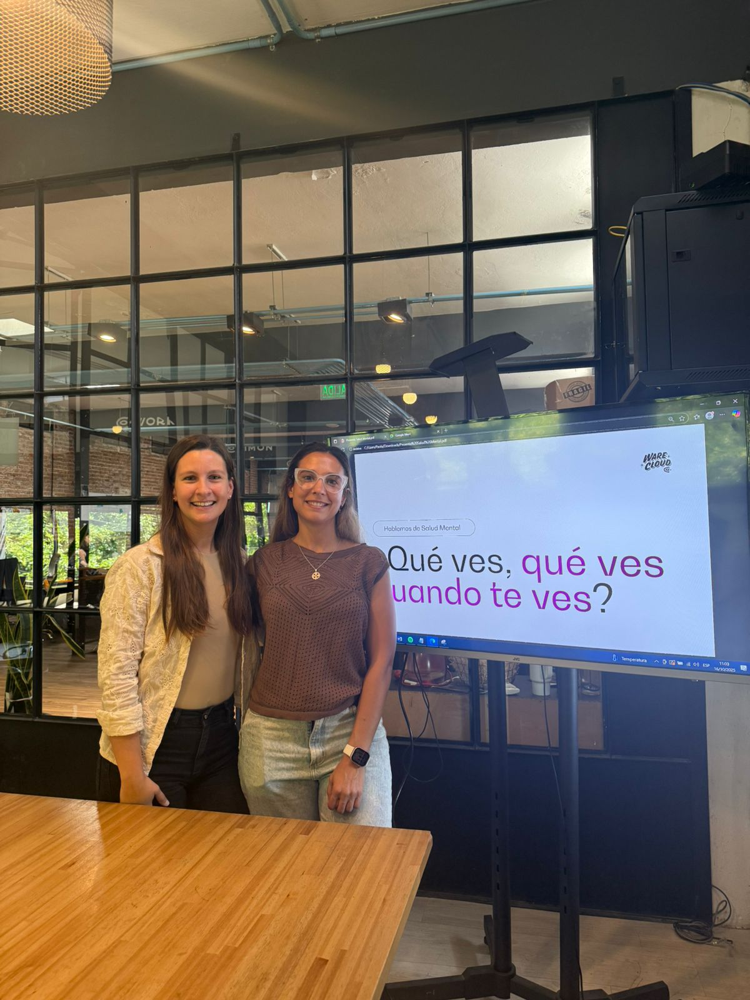
BienestarEl desarrollo es bidireccional
Evaluaciones de desempeño
El 100% de los colaboradores recibió evaluaciones durante 2025. El feedback es bidireccional: del líder al equipo y del equipo al líder. Promovemos instancias formales e informales para alinear objetivos y detectar fortalezas.
Generamos momentos compartidos
La cultura no vive solo en los valores. Vive en los momentos que elegimos compartir.
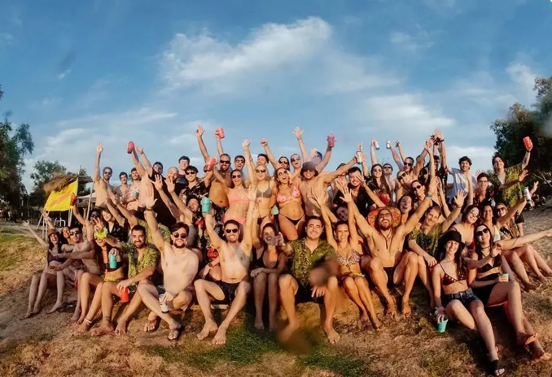
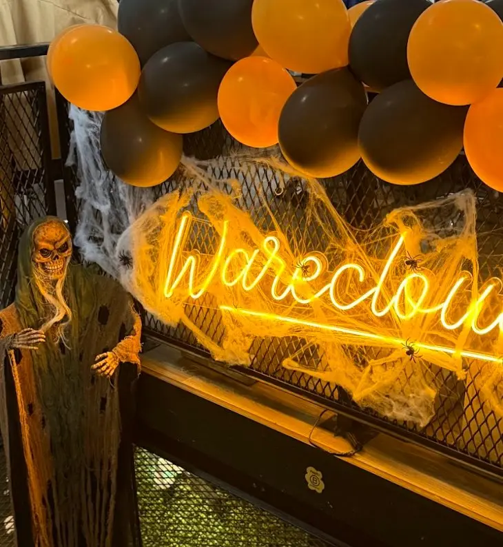
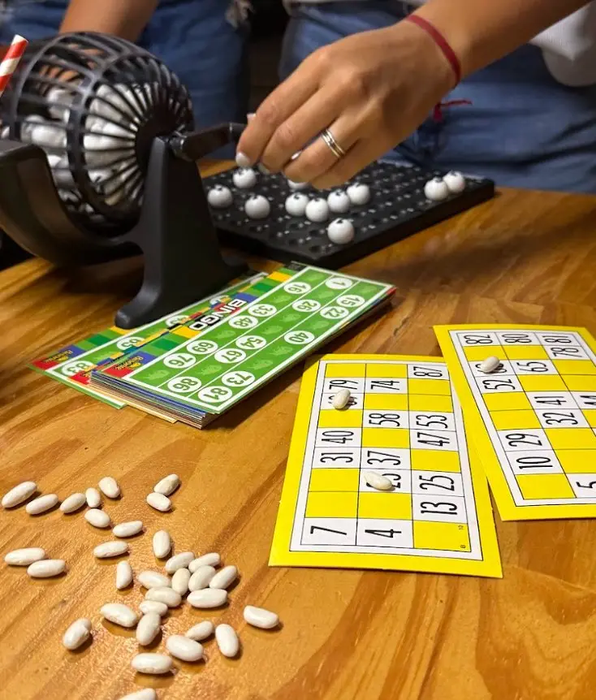
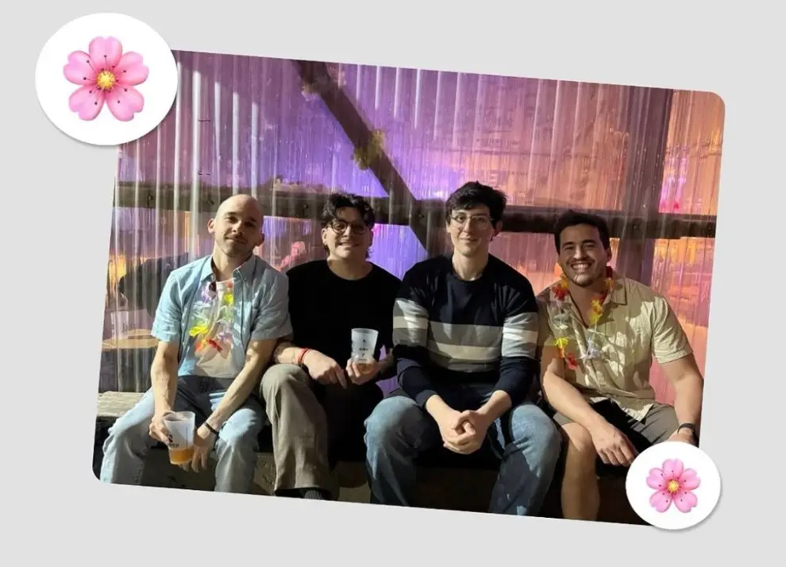
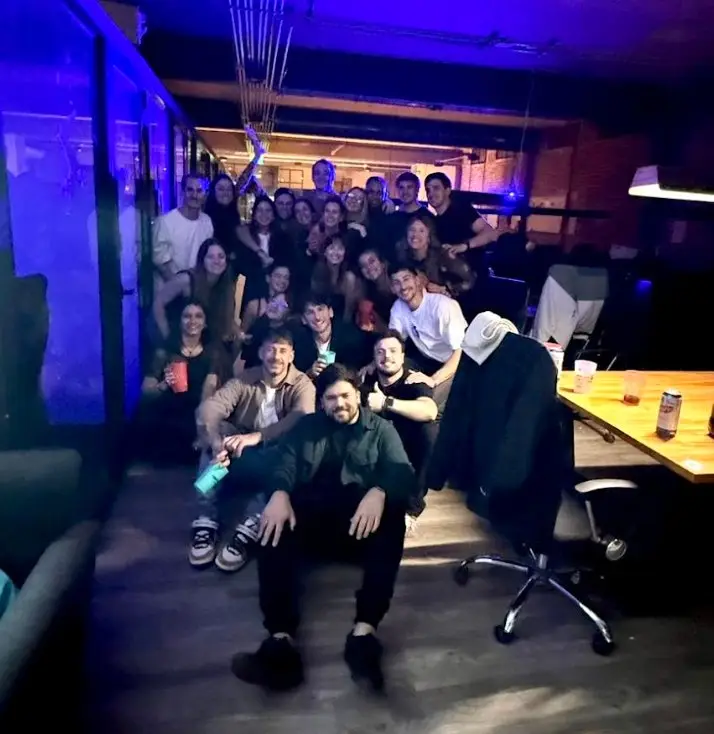